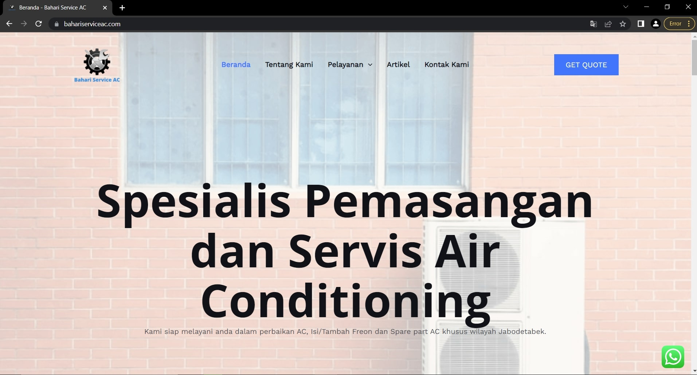
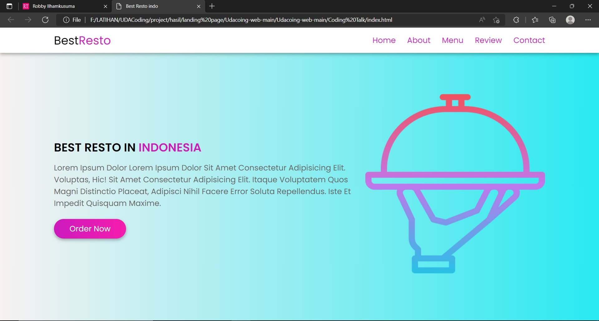

About

I'm currently working at a boarding school in Jakarta as
an IT supporter and God willing, I'm continuing my
postgraduate studies at one of the private campuses in
Jakarta. And I'm also learning programming languages
and new technologies in the IT world. I am a person
who likes to learn new things and ready to work
individually and in a team.
PROFILE
I come from and was born in Bandung, West Java, once
studied at a private university there. For complete
biodata I include below.
FULLNAME:
Robby Ilhamkusuma
BIRTH DATE:
September 18, 1988
ADDRESS:
Cipayung, Jakarta Timur
LECTURE CONCENTRATION:
Informatics Engineering
JOB:
IT Support, Freelancer, Web & Mobile Programmer
WEBSITE:
www.laksanasolution.com
EMAIL:
robbyikusuma88@gmail.com
GITHUB:
https://github.com/robbytrujillo
SKILLS
I'm currently studying Web Developer (HTML, CSS, JS,
etc.) and Mobile Developer (Java, Flutter, Dart, etc.).
Resume

More of my credentials.
Here I convey related work experience that I have worked
on.
Work Experience
Web Design
January 2020 - Present
Laksana Web Solution
services that are engaged in making websites for the
Jakarta and surrounding areas.
Teaching programming
November 2017 - Present
Ibnu Hajar Boarding School
Teach programming to students from junior high to high
school levels.
IT Support
November 2017 - Present
Ibnu Hajar Boarding School
supporting information technology to students from
junior high to high school levels.
Credit Analyst
January 2016 - January 2017
Bank Sinarmas
Conduct visits to customers who will conduct a survey
process after the customer has completed the
requirements that have been adjusted to the customer's
submission. After complying with the SOP, a proposal is
made so that it can be approved by the Sinarmas bank.
Account Officer
January 2015 - December 2015
Bank Sinarmas
Learn how to find and establish relationships with many
MSME entrepreneurs and traders so that they are
interested in joining as new customers of Sinarmas Bank
and maintain priority customers so that they want to
return to adding facilities with Sinarmas Bank.
Account Officer
December 2012 - January 2015
Bank Victoria Syariah
Learn how to find and establish relationships with many
MSME entrepreneurs and traders so that they are
interested in joining as new customers of Victoria
Syariah Bank and maintain priority customers so that
they want to return to adding facilities with Victoria
Syariah Bank.
Merchandiser
August 2012 - December 2012
Nutricia
My job desk visited various outlets and stores to check
the stock of Nutricia products that had been displayed
in various corners of the place and arranged the
products so that they looked good and deserved to be
enjoyed by consumers.
Relationship Officer
Februari 2012 - August 2012
Bank BTPN
Learn how to find and establish relationships with many
MSME entrepreneurs and traders so that they are
interested in joining as new customers of Bank BTPN and
maintain priority customers so that they want to return
to adding facilities with Bank BTPN.
Education
Postgraduate Computer Science
Februari 2022 - Present
Budi Luhur University
I just learned Introduction to Advanced Systems
Analysis, Data Structures, Introduction to Algorithms
and advanced programming, computer networking and data
communication, data management, computer architecture,
and many more.
Bachelor of Informatics Engineering
Oktober 2010 - November 2011
LPKIA Bandung Institute of Digital Economics
I have studied Advanced Algorithms and programming, Java
Programming Language, Adobe Flash, System analysis on
computers, computer networks, operating systems,
microcontrollers, artificial intelligence, and many
more.
Diploma 3 Informatics Engineering
July 2007 - August 2010
LPKIA Commercial Computer Polytechnic Bandung
I have learned Basic Algorithms, Data Structures, Object
oriented Programming, C++, Visual basic, Databases,
Microsoft Office, and many others.
Services
What Can I Do For You?
I can work on several things that can be one solution
for you.
Web Design

I have worked on several web designs for business and
customer business purposes.
Web Development

I have studied and attended several workshops on how
to
build multiple websites
Graphics Design
I have worked on several graphic designs in the form
of
flyers, banners, and others needed by consumers.